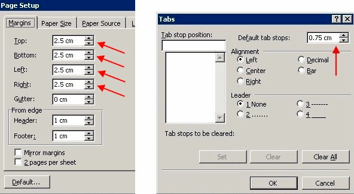

1) Trình bày đơn giản, không cần dùng nhiều Styles, chỉ cần "Normal" style là đủ . (Fig.1)
Không nên dùng các Styles phức tạp khác (Heading1, Heading2, Title, List, HTML,...) , hay tạo ra các Styles mới khác.
2) Chỉ dùng 1 loại font duy nhất: Times New Roman, font size: 12 pts (Fig. 2)
3) Cho các tựa đề, tiểu tựa, v.v.: dùng các sizes lớn hơn (14, 16 pts...), hoặc dùng đậm (bold), nghiêng đậm (bold-italic), hoặc các màu sắc khác.
4) Trang giấy là US-Letter hoặc A4. Margins là 1 inch, hoặc 2.5 cm. Tabs là 0.25 inch hoặc 0.75 cm. (Fig.3 & Fig.4)
5) Tránh không dùng Bullets hoặc Automatic Numbering.
6) Paragraph alignment là: Left
7) Paragraph spacing: before: 0 pts; after: 6 pts. (Fig.5)
8) Không dùng "Curly quotation marks", chỉ dùng "Straight quotation marks".
9) Cho các tựa đề: Tránh không đánh máy toàn chữ hoa (capitals), mà chỉ đánh máy ký tự hoa ở đầu mỗi chữ. Thí dụ:
- Không đánh máy: ĐỨC PHẬT VÀ GIÁO PHÁP CỦA NGÀI
- Chỉ đánh máy: Đức Phật Và Giáo Pháp Của Ngài
Tóm lại, nguyên tắc chung là: S.I.B. (simplicity is best - đơn giản là tốt nhất).
Bình Anson
BuddhaSasana website
Fig. 1:
Fig 2:

Fig 3:

Fig 4:
Fig 5: